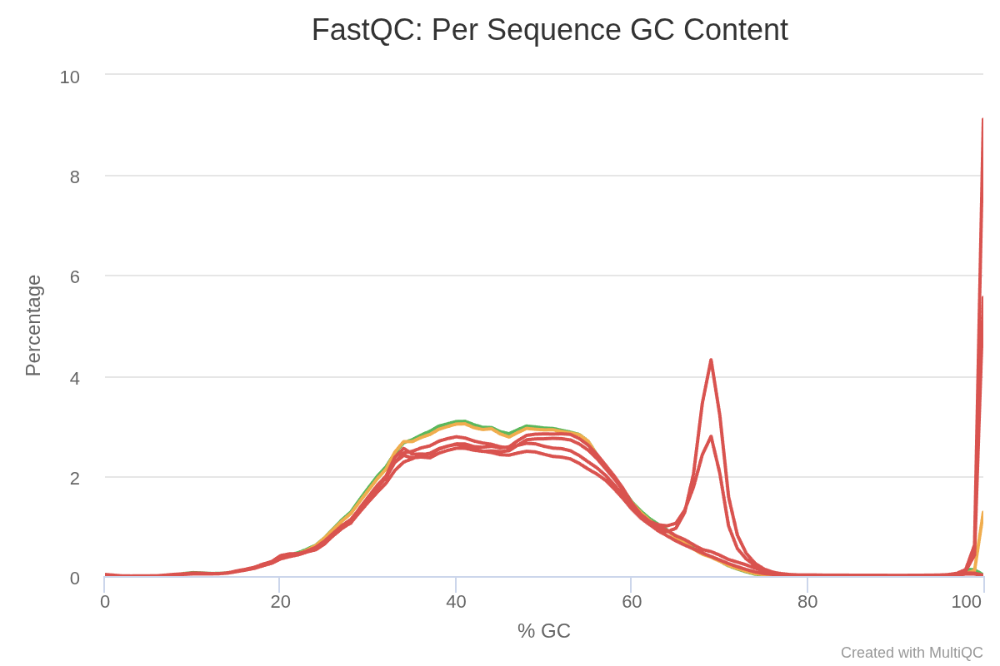
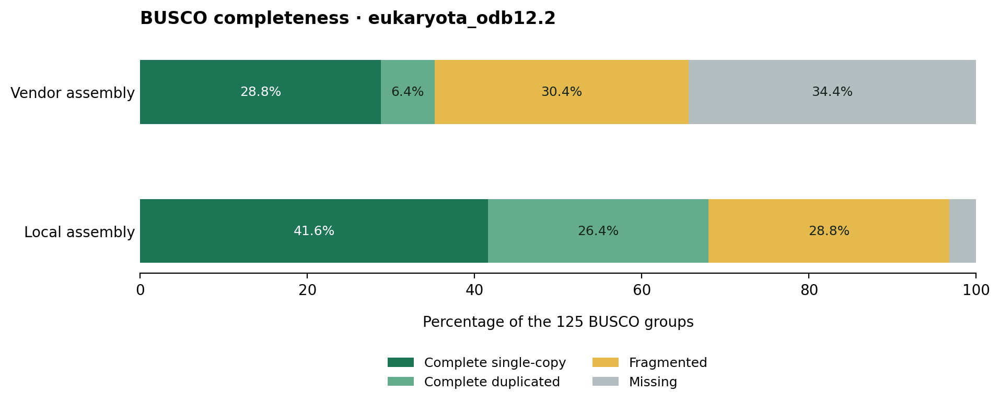

From RNA reads to a transcript catalogue.
A source-linked account of what the vendor reports doing for three Dinoponera gigantea samples (AZ1, AZ2, AZ3), what the delivered files contain, and which claims remain unverified.
Five reported stages
The order below follows the vendor's methods and deliverables. Functional annotation and read mapping are separate branches after assembly.
Read quality control
The report describes checking the raw paired-end reads, trimming adapters, and assessing the cleaned data.
FastQC on raw FASTQ reads
Per-base quality and GC distributions are shown in the vendor report. Raw Q30 percentages are 97.07%, 96.88%, and 96.89% for AZ1–AZ3.
TrimGalore adapter removal
The software table names TrimGalore. The report provides post-cleaning read and Q30 summaries; trimmed FASTQ files and command logs are not included in the delivery.
| Sample | Raw reads | Clean reads | Clean bases | Clean GC | Clean Q30 |
|---|---|---|---|---|---|
| AZ1 | 27,900,218 | 27,843,294 | 4,176,494,100 | 44% | 97.43% |
| AZ2 | 33,310,714 | 28,228,772 | 4,234,315,800 | 45% | 97.54% |
| AZ3 | 19,140,116 | 17,348,446 | 2,602,266,900 | 44% | 97.51% |
Reported read length: 150 bp. Totals and percentages in this table come from the vendor report.


De novo transcriptome assembly
Trinity is named as the assembler. The supplied nucleotide FASTA independently confirms the sequence count, base total, and GC percentage reported.
Trinity transcript assembly
Reads were assembled without a reference genome. The vendor report does not provide the Trinity command, parameters, or assembly log.
Peptides and structural features
The delivered peptide FASTA contains 41,281 records. The GFF3 contains 201,769 feature rows labeled with TransDecoder as the source.
Assembly measurements
* Unigene figure needs a definition
The report states 31,353 unigenes, but the delivered FASTA has 304,237 distinct Trinity gene prefixes. A filtering or clustering rule may explain the difference; none is documented in the delivered report.
Structural and functional annotation
The report names Trinotate and describes sequence similarity, protein-domain, and functional-database annotations.
Predicted open reading frames
TransDecoder-origin features appear in the delivered GFF3, linked to peptide identifiers in the peptide FASTA.
Similarity and domain searches
The report describes SwissProt homology, Pfam, eggNOG, GO, and KEGG through Trinotate. The supplied functional TSV includes Pfam/InterPro identifiers, GO terms, and pathway references.
Category counts stated in the report
The report does not define whether these are unique terms, annotated proteins, or hit rows. The delivered functional TSV has 179 non-empty records and no header, so these category counts are treated as reported values.
Read mapping and expressed-gene tables
The report gives mapped-read percentages and describes HtSeq counting. Each sample has a delivered spreadsheet containing Trinity IDs, descriptions, and read counts.
Map cleaned reads
The methods table names HISAT2, while the mapping section says BWA against a reference genome. No reference genome, alignment files, or mapping command is included, so the exact aligner and reference cannot be verified.
Summarize expression per sample
HtSeq is named in the methods and expression section. The three workbooks contain one ID and read-count row per populated entry; these are descriptive per-sample counts, without a control/treatment comparison.
| Sample | Mapped reads · report | Mapping rate · report | Expressed genes · report | Rows in workbook* | Download |
|---|---|---|---|---|---|
| AZ1 | 10,769,660 | 38.68% | 27,926 | 27,922 | AZ1 Excel ↗ |
| AZ2 | 9,136,385 | 32.37% | 18,962 | 18,957 | AZ2 Excel ↗ |
| AZ3 | 6,751,968 | 38.92% | 15,381 | 15,377 | AZ3 Excel ↗ |
* Count of non-empty first-column entries after the header. The report and spreadsheets differ by 4–5 entries; neither the reason nor any filter is documented.
Antimicrobial peptide screening
The methods table names the DRAMP database. The delivered workbook lists peptide-query matches to named antimicrobial peptides.
DRAMP sequence matches
Rows include a query peptide, matched DRAMP ID, sequence fragments, percentage identity, and activity annotation. The exact search tool, database release, and thresholds are not supplied.
688 rows, 370 distinct queries
The workbook contains 688 populated match rows from 370 distinct query peptide IDs. Multiple hits can belong to one query. These matches are screening leads, not experimentally confirmed antimicrobial activity.
New BUSCO assessment of the vendor FASTA
Performed locally after delivery on the original vendor assembly. This is a newly computed result, separate from the vendor's original methods report.
35.2% complete · 44/125 ortholog groups
BUSCO 6.1.0 · transcriptome mode · eukaryota_odb12.2, release 13 May 2026 · MetaEuk 7.bba0d80 · HMMER 3.4.
Compare with the saved local result

Both assessments use the same 125-marker lineage. The local result is historical; its FASTA is absent.
Open the source files
These are the vendor's original report and extracted deliverables. The compressed archive is also retained.
Evidence notes
These distinctions matter when interpreting the report or reusing its results.
Unigene count is unresolved
The report's 31,353 “unigenes” cannot be recreated by counting Trinity gene prefixes in the delivered FASTA (304,237). It may use an undocumented filter or clustering step.
Mapping method is inconsistent
HISAT2 appears in the software table; BWA appears in the mapping prose. The stated reference genome and alignment files were not delivered.
Expression counts differ slightly
The reported expressed-gene totals exceed the populated workbook row counts by 4–5 per sample. A filtering rule is not documented.
Variant calling is unverified
The report includes a freeBayes/SNP section for sample “MDU1,” which is not one of AZ1–AZ3. No matching variant file is present. It is excluded from this workflow summary.
Scope of this page
Figures marked “report” are transcribed from the vendor report; figures marked “verified” were counted directly from delivered files. The BUSCO section is a new assessment performed locally on the vendor FASTA, using the same lineage release as the saved local result. Raw FASTQs, exact commands, logs, and a reference genome were not supplied. No differential-expression analysis is presented because no control/treatment design is recorded.